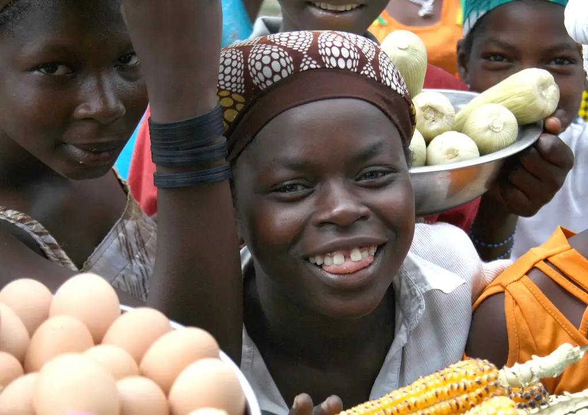

<title>Ferme Akwaba</title>
<link rel="preconnect" href="https://fonts.googleapis.com">
<link rel="preconnect" href="https://fonts.gstatic.com" crossorigin>
<link href="https://fonts.googleapis.com/css2?family=Fraunces:opsz,wght,SOFT,WONK@9..144,400..600,0..100,0..1&family=Urbanist:wght@400..700&display=swap" rel="stylesheet">
<style>
:root{
  color-scheme: light;
  --brousse:#16241B;      /* nuit de brousse : fond du récit */
  --brousse-2:#101B14;    /* motif ton sur ton */
  --vert:#0A4D2A;         /* vert Akwaba : marque */
  --creme:#F4ECDD;        /* crème coton */
  --creme-2:#FBF7EF;
  --mais:#E9771C;         /* orange maïs : mot d'accent */
  --poussin:#F5C842;      /* jaune poussin : action */
  --feuille:#C9E6A0;      /* vert feuille : section commande */
  --encre:#14201A;
  --encre-doux:#3B4A40;
  --wa:#25D366;
  --sans:"Urbanist", "Avenir Next", "Segoe UI", system-ui, sans-serif;
  --serif:"Fraunces", "Iowan Old Style", Georgia, serif;
  --gutter:clamp(16px, 5vw, 72px);
  --max:1240px;
}
*{box-sizing:border-box}
html.lenis, html.lenis body{height:auto}
.lenis.lenis-smooth{scroll-behavior:auto!important}
body{margin:0;background:var(--brousse);color:var(--creme);font-family:var(--sans);font-size:18px;line-height:1.55;-webkit-font-smoothing:antialiased;overflow-x:hidden}
img{max-width:100%;display:block}
a{color:inherit}
h1,h2,h3{margin:0;font-weight:500;letter-spacing:-.015em;text-wrap:balance;line-height:1.05}
p{margin:0}
.acc{font-family:var(--serif);font-variation-settings:"SOFT" 100,"WONK" 1;font-weight:500;letter-spacing:-.01em}
.wrap{max-width:var(--max);margin-inline:auto;padding-inline:var(--gutter)}
:focus-visible{outline:3px solid var(--poussin);outline-offset:3px;border-radius:6px}

/* ---------- En-tête ---------- */
.top{position:fixed;inset:0 0 auto 0;z-index:40;display:flex;justify-content:space-between;align-items:flex-start;padding:calc(20px + env(safe-area-inset-top,0px)) var(--gutter) 0;pointer-events:none}
.top > *{pointer-events:auto}
.brand{display:flex;align-items:center;gap:10px;text-decoration:none;color:var(--creme);font-weight:700;font-size:22px;letter-spacing:.02em;text-transform:uppercase;transition:color .4s}
.brand svg{width:30px;height:34px}
.top.light .brand{color:var(--encre)}
.notch{position:absolute;left:50%;top:0;translate:-50% 0;width:200px;height:56px;border:0;background:var(--vert);border-radius:0 0 110px 110px;cursor:pointer;display:grid;place-items:center;padding-top:env(safe-area-inset-top,0px)}
.notch span{display:block;width:38px;height:2px;background:var(--creme);box-shadow:0 -9px 0 var(--creme),0 9px 0 var(--creme);transition:.3s}
.notch[aria-expanded="true"] span{background:transparent;box-shadow:none}
.notch[aria-expanded="true"]::before,.notch[aria-expanded="true"]::after{content:"";position:absolute;width:30px;height:2px;background:var(--creme);rotate:45deg}
.notch[aria-expanded="true"]::after{rotate:-45deg}
.cmd{display:inline-flex;align-items:center;gap:10px;background:var(--poussin);color:var(--encre);text-decoration:none;font-weight:600;padding:14px 22px;border-radius:8px;font-size:17px;transition:transform .2s}
.cmd:hover{transform:translateY(-2px)}
.cmd svg{width:20px;height:20px}
.menu{position:fixed;inset:0;z-index:35;background:var(--vert);display:grid;place-items:center;clip-path:circle(0 at 50% 0);transition:clip-path .7s cubic-bezier(.7,0,.2,1);visibility:hidden}
.menu.open{clip-path:circle(150% at 50% 0);visibility:visible}
.menu ul{list-style:none;margin:0;padding:0;text-align:center;display:grid;gap:10px}
.menu a{font-family:var(--serif);font-variation-settings:"SOFT" 100,"WONK" 1;font-size:clamp(34px,6vw,64px);text-decoration:none;color:var(--creme)}
.menu a:hover{color:var(--poussin)}

/* ---------- 1. La question ---------- */
.hero{position:relative;min-height:100svh;display:grid;place-items:center;overflow:hidden;background:var(--brousse);padding-block:120px 90px}
#motif{position:absolute;inset:0;width:100%;height:100%}
.hero h1{position:relative;font-size:clamp(38px,5.4vw,80px);font-weight:500;text-align:center;max-width:15ch;margin-inline:auto;padding-inline:16px}
.hero h1 .acc{color:var(--mais);font-size:1.12em;display:inline-block}
.w{display:inline-block;overflow:hidden;vertical-align:bottom;padding-bottom:.08em;margin-bottom:-.08em}
.w > span{display:inline-block}
.down{position:absolute;bottom:28px;left:50%;translate:-50% 0;width:52px;height:52px;border-radius:50%;background:var(--creme);display:grid;place-items:center;text-decoration:none}
.down svg{width:18px;height:18px}

/* ---------- 2. Le chiffre ---------- */
.num{position:relative;height:260vh;background:var(--brousse)}
.num-stage{position:sticky;top:0;height:100svh;overflow:hidden;display:grid;place-items:center}
.big{font-family:var(--serif);font-variation-settings:"SOFT" 100,"WONK" 0;font-weight:600;color:var(--mais);font-size:min(62vw,70vh);line-height:.8;letter-spacing:-.05em;will-change:transform;transform-origin:50% 52%}
.num-cap{position:absolute;left:0;right:0;bottom:12vh;text-align:center;padding-inline:var(--gutter);font-size:clamp(20px,2.2vw,30px);max-width:34ch;margin-inline:auto}
.num-cap b{font-weight:600;color:var(--poussin)}
.num-after{position:absolute;inset:0;display:grid;place-items:center;background:var(--mais);color:var(--encre);opacity:0;padding-inline:var(--gutter)}
.num-after p{font-size:clamp(28px,4vw,58px);max-width:18ch;text-align:center;line-height:1.1;text-wrap:balance;font-weight:500}
.num-after .acc{color:var(--creme)}

/* ---------- 3. Conviction ---------- */
.belief{position:relative;min-height:100svh;overflow:hidden;display:flex;align-items:flex-end;background:var(--brousse)}
.belief-img{position:absolute;inset:-8% 0;background:url(img/eleveur-poulet.webp) center 30%/cover no-repeat;will-change:transform}
.belief::after{content:"";position:absolute;inset:0;background:linear-gradient(90deg,rgba(16,27,20,.86) 0%,rgba(16,27,20,.55) 45%,rgba(16,27,20,0) 75%),linear-gradient(0deg,rgba(16,27,20,.7),transparent 45%)}
.belief .wrap{position:relative;z-index:1;width:100%;padding-block:0 14vh}
.belief h2{font-size:clamp(40px,5.6vw,84px);max-width:12ch}
.belief h2 .acc{color:var(--poussin)}
.belief p{margin-top:22px;max-width:44ch;font-size:clamp(17px,1.4vw,20px);color:#E9E2D2}
.cluster{position:absolute;right:3vw;bottom:8vh;z-index:1;width:min(34vw,380px);aspect-ratio:1}
.cluster svg{position:absolute;overflow:visible}

/* ---------- 4. La ferme ---------- */
.farm{background:var(--feuille);padding-block:clamp(70px,10vw,140px);color:var(--encre)}
.farm-card{display:grid;grid-template-columns:1.05fr 1fr;background:var(--creme);border-radius:6px;overflow:hidden;min-height:440px}
.farm-txt{padding:clamp(28px,5vw,72px);display:flex;flex-direction:column;gap:20px;justify-content:center}
.eyebrow{font-size:14px;text-transform:uppercase;letter-spacing:.14em;font-weight:600;color:var(--vert)}
.farm h2{font-size:clamp(32px,3.4vw,48px)}
.farm h2 .acc{color:var(--mais)}
.farm-txt p{color:var(--encre-doux);max-width:46ch;font-size:clamp(17px,1.35vw,20px)}
.facts{display:grid;grid-template-columns:repeat(3,auto);justify-content:start;gap:8px 34px;margin-top:6px}
.facts dt{font-family:var(--serif);font-variation-settings:"SOFT" 100;font-size:34px;color:var(--vert);line-height:1;font-variant-numeric:tabular-nums}
.facts dd{margin:4px 0 0;font-size:14px;color:var(--encre-doux);max-width:14ch}
.btn-dark{align-self:flex-start;background:var(--encre);color:var(--creme);text-decoration:none;padding:15px 24px;border-radius:6px;font-weight:600;margin-top:6px}
.farm-photo{position:relative;min-height:320px}
.farm-photo img{position:absolute;inset:0;width:100%;height:100%;object-fit:cover;clip-path:ellipse(92% 100% at 100% 50%)}

/* ---------- 5. Ce qui sort de la ferme ---------- */
.prod{position:relative;overflow:hidden;background:var(--brousse);padding-block:clamp(90px,12vw,160px) clamp(60px,8vw,110px)}
.prod-bg{position:absolute;inset:0}
.prod-bg img{position:absolute;inset:0;width:100%;height:100%;object-fit:cover;opacity:0;transform:scale(1.08);transition:opacity .9s ease,transform 1.6s ease}
.prod-bg img.on{opacity:1;transform:scale(1)}
.prod::after{content:"";position:absolute;inset:0;background:linear-gradient(90deg,rgba(16,27,20,.88),rgba(16,27,20,.55) 60%,rgba(16,27,20,.35))}
.prod .wrap{position:relative;z-index:1}
.prod h2{font-size:clamp(40px,5vw,72px);color:var(--poussin);text-align:center;margin-bottom:clamp(40px,6vw,80px)}
.rows{list-style:none;margin:0;padding:0;border-top:1px solid rgba(244,236,221,.28)}
.rows li{border-bottom:1px solid rgba(244,236,221,.28)}
.row{all:unset;box-sizing:border-box;cursor:pointer;width:100%;display:grid;grid-template-columns:1fr auto 34px;align-items:center;gap:20px;padding:30px 0;transition:padding .35s}
.row:focus-visible{outline:3px solid var(--poussin)}
.row-name{font-family:var(--serif);font-variation-settings:"SOFT" 100,"WONK" 1;font-size:clamp(24px,2.6vw,36px);line-height:1.1}
.row-detail{display:block;font-family:var(--sans);font-size:16px;color:#D8D1C0;margin-top:6px;max-width:52ch;max-height:0;overflow:hidden;opacity:0;transition:max-height .45s,opacity .45s}
.row-price{font-weight:600;font-size:clamp(17px,1.5vw,21px);font-variant-numeric:tabular-nums;white-space:nowrap}
.dot{width:28px;height:28px;border-radius:50%;display:grid;place-items:center;justify-self:end;transition:transform .35s}
.dot svg{width:12px;height:12px}
.rows li.on .row{padding-left:18px}
.rows li.on .row-detail{max-height:120px;opacity:1}
.rows li.on .dot{transform:scale(1.25) rotate(-45deg)}

/* ---------- 6. Commande ---------- */
.order{background:var(--feuille);color:var(--encre);padding-block:clamp(70px,10vw,140px);position:relative;overflow:hidden}
.order .wrap{display:grid;grid-template-columns:1fr 1.05fr;gap:clamp(30px,6vw,90px);align-items:start}
.order h2{font-size:clamp(38px,4.6vw,66px);color:var(--vert)}
.order h2 .acc{color:var(--mais)}
.order-intro p{margin-top:20px;font-size:clamp(17px,1.4vw,20px);color:var(--encre-doux);max-width:40ch}
.pay{display:flex;flex-wrap:wrap;gap:8px;margin-top:26px}
.pay span{font-size:14px;font-weight:600;border:1.5px solid var(--vert);color:var(--vert);border-radius:999px;padding:6px 14px}
.basket{background:var(--creme-2);border:2px solid var(--vert);border-radius:6px;padding:clamp(22px,3vw,36px);display:grid;gap:22px}
.basket h3{font-family:var(--serif);font-variation-settings:"SOFT" 100;font-size:30px;color:var(--vert);text-align:center}
.line{display:grid;grid-template-columns:1fr auto;gap:10px 16px;align-items:center;padding-bottom:20px;border-bottom:1px solid #DCD3C1}
.line-name{font-weight:600;font-size:19px}
.line-name small{display:block;font-weight:400;font-size:15px;color:var(--encre-doux)}
.step{display:flex;align-items:center;gap:6px}
.step button{width:40px;height:40px;border-radius:50%;border:1.5px solid var(--vert);background:transparent;color:var(--vert);font-size:22px;line-height:1;cursor:pointer;font-family:var(--sans)}
.step button:hover{background:var(--vert);color:var(--creme)}
.step output{min-width:30px;text-align:center;font-weight:700;font-size:20px;font-variant-numeric:tabular-nums}
.seg{grid-column:1/-1;display:flex;gap:6px;flex-wrap:wrap}
.seg label{position:relative}
.seg input{position:absolute;opacity:0}
.seg span{display:block;padding:8px 14px;border-radius:999px;border:1.5px solid #CFC5B2;font-size:15px;cursor:pointer}
.seg input:checked + span{background:var(--vert);border-color:var(--vert);color:var(--creme)}
.seg input:focus-visible + span{outline:3px solid var(--mais);outline-offset:2px}
.tray{grid-column:1/-1;display:grid;grid-template-columns:repeat(10,1fr);gap:5px;background:#E6D8BC;padding:10px;border-radius:10px;position:relative}
.cell{aspect-ratio:1;border-radius:50%;background:#D5C39F;display:grid;place-items:center}
.egg{width:74%;height:92%;border-radius:50% 50% 46% 46%/60% 60% 40% 40%;background:radial-gradient(circle at 35% 30%,#FFFDF8,#F1DFC2 62%,#D9BD93);transform:scale(0)}
.tray-x{position:absolute;right:-10px;top:-14px;background:var(--mais);color:#fff;font-weight:700;border-radius:999px;padding:3px 10px;font-size:15px;font-variant-numeric:tabular-nums}
.where{display:grid;grid-template-columns:1fr auto;gap:16px;align-items:center}
.where select{font:inherit;font-size:17px;padding:10px 12px;border-radius:6px;border:1.5px solid #CFC5B2;background:#fff;color:var(--encre)}
.total{display:flex;justify-content:space-between;align-items:baseline;font-size:18px}
.total strong{font-family:var(--serif);font-variation-settings:"SOFT" 100;font-size:40px;color:var(--vert);font-variant-numeric:tabular-nums}
.bubble{background:#DCF8C6;color:#1F2B22;border-radius:12px 12px 12px 2px;padding:14px 16px;font-size:15px;line-height:1.45;position:relative}
.bubble small{display:block;font-size:12px;color:#5B6B60;margin-bottom:4px;font-weight:600;letter-spacing:.04em;text-transform:uppercase}
.send{display:flex;gap:10px;flex-wrap:wrap}
.send a,.send button{flex:1 1 auto;display:inline-flex;justify-content:center;align-items:center;gap:10px;font:inherit;font-weight:700;border-radius:8px;padding:15px 18px;text-decoration:none;cursor:pointer}
.send a{background:var(--wa);color:#0B2913;border:0}
.send button{background:transparent;border:1.5px solid var(--vert);color:var(--vert);flex:0 0 auto}
.note{font-size:13px;color:var(--encre-doux);text-align:center}

/* ---------- 7. L'assiette ---------- */
.plate{background:var(--creme-2);color:var(--encre);padding-block:clamp(80px,11vw,150px)}
.plate .wrap{display:grid;grid-template-columns:1.1fr 1fr;gap:clamp(30px,6vw,90px);align-items:center}
.plate blockquote{margin:0;font-family:var(--serif);font-variation-settings:"SOFT" 100,"WONK" 1;font-size:clamp(28px,3.1vw,44px);line-height:1.18;color:var(--encre)}
.plate blockquote .acc{color:var(--mais)}
.plate figcaption{margin-top:22px;font-size:17px;color:var(--encre-doux);max-width:46ch}
.plate figcaption b{color:var(--mais);font-weight:600}
.shape{position:relative;aspect-ratio:4/4.4;max-width:520px;justify-self:end;width:100%}
.shape img{position:absolute;inset:0;width:100%;height:100%;object-fit:cover;clip-path:polygon(18% 0,100% 6%,94% 72%,60% 100%,4% 86%,0 30%)}
.shape svg{position:absolute;inset:-14px;width:calc(100% + 28px);height:calc(100% + 28px);overflow:visible}

/* ---------- 8. Pied de page ---------- */
.foot{background:var(--vert);color:var(--creme);padding-block:clamp(70px,9vw,120px) 36px;position:relative;overflow:hidden}
.foot .foot-big{color:var(--creme);font-family:var(--serif);font-variation-settings:"SOFT" 100,"WONK" 1;font-size:clamp(46px,8vw,120px);line-height:.95;margin-bottom:clamp(40px,6vw,80px)}
.foot-big .acc{color:var(--poussin)}
.foot-grid{display:grid;grid-template-columns:repeat(4,1fr);gap:30px;padding-top:34px;border-top:1px solid rgba(244,236,221,.25)}
.foot h4{margin:0 0 10px;font-size:13px;text-transform:uppercase;letter-spacing:.14em;color:var(--feuille);font-weight:600}
.foot p,.foot li{font-size:16px;color:#E3DCCB}
.foot ul{list-style:none;margin:0;padding:0;display:grid;gap:4px}
.tel{font-variant-numeric:tabular-nums;user-select:all}
.credits{margin-top:50px;font-size:12px;line-height:1.6;color:#B9C8B8}
.credits a{color:#D9E6D5}
.proto{display:inline-block;background:var(--poussin);color:var(--encre);font-weight:700;font-size:12px;padding:2px 8px;border-radius:4px;letter-spacing:.06em;text-transform:uppercase;margin-bottom:10px}

@media (max-width:860px){
  body{font-size:17px}
  .brand{font-size:17px}.brand svg{width:24px;height:28px}
  .brand .full{display:none}
  .notch{width:92px;height:46px}.notch span{width:28px}
  .cmd{padding:11px 14px;font-size:15px}.cmd .t{display:none}
  .farm-card,.order .wrap,.plate .wrap{grid-template-columns:1fr}
  .farm-photo{order:-1;min-height:280px}
  .farm-photo img{clip-path:ellipse(120% 96% at 50% 0%)}
  .facts{grid-template-columns:repeat(3,1fr);gap:8px 16px}.facts dt{font-size:28px}
  .row{grid-template-columns:1fr 28px;gap:6px 14px}
  .row-price{grid-column:1;grid-row:2;font-size:16px;color:var(--poussin)}
  .dot{grid-column:2;grid-row:1}
  .cluster{width:46vw;right:-4vw;bottom:auto;top:14vh;opacity:.9}
  .belief::after{background:linear-gradient(0deg,rgba(16,27,20,.92) 10%,rgba(16,27,20,.35) 70%,rgba(16,27,20,.2))}
  .shape{justify-self:center;max-width:420px}
  .foot-grid{grid-template-columns:1fr 1fr}
  .tray{grid-template-columns:repeat(6,1fr)}
}
@media (prefers-reduced-motion:reduce){
  .num{height:auto}.num-stage{position:relative;height:auto;padding-block:80px}
  .big{font-size:40vw}.num-cap{position:static;margin-top:20px}.num-after{display:none}
  .egg{transform:none}
}
</style>

<svg width="0" height="0" style="position:absolute" aria-hidden="true">
  <defs>
    <symbol id="i-arrow" viewBox="0 0 12 12"><path d="M1 6h9M6.5 2.5 10 6l-3.5 3.5" fill="none" stroke="currentColor" stroke-width="1.8" stroke-linecap="round" stroke-linejoin="round"/></symbol>
    <symbol id="i-basket" viewBox="0 0 24 24"><path d="M3 9h18l-2 11H5L3 9Zm4 0 4-6m6 6-4-6" fill="none" stroke="currentColor" stroke-width="1.8" stroke-linejoin="round" stroke-linecap="round"/></symbol>
    <symbol id="i-wa" viewBox="0 0 24 24"><path d="M12 2a10 10 0 0 0-8.6 15.1L2 22l5-1.3A10 10 0 1 0 12 2Zm5.3 14.2c-.2.6-1.3 1.2-1.8 1.2-.5.1-1 .2-3.3-.7-2.8-1.1-4.5-3.9-4.7-4.1-.1-.2-1.1-1.5-1.1-2.8 0-1.4.7-2 1-2.3.3-.3.6-.3.8-.3h.6c.2 0 .4 0 .6.5l.9 2.1c.1.1.1.3 0 .5l-.3.5-.4.5c-.1.1-.3.3-.1.6.1.3.6 1.1 1.4 1.8 1 .9 1.8 1.1 2.1 1.3.3.1.4.1.6-.1l.8-1c.2-.3.4-.2.6-.1l2 .9c.3.1.5.2.5.3.1.2.1.7-.1 1.2Z" fill="currentColor"/></symbol>
    <!-- formes du motif et des bouquets : fleur, feuille, œuf, plume, grain -->
    <symbol id="s-fleur" viewBox="-50 -50 100 100"><g><ellipse cx="0" cy="-24" rx="13" ry="24"/><ellipse cx="0" cy="24" rx="13" ry="24"/><ellipse cx="-24" cy="0" rx="24" ry="13"/><ellipse cx="24" cy="0" rx="24" ry="13"/></g></symbol>
    <symbol id="s-feuille" viewBox="-50 -50 100 100"><path d="M0-48C30-22 30 22 0 48-30 22-30-22 0-48Z"/></symbol>
    <symbol id="s-oeuf" viewBox="-50 -50 100 100"><path d="M0-46C20-46 34-12 34 10 34 34 18 46 0 46S-34 34-34 10C-34-12-20-46 0-46Z"/></symbol>
    <symbol id="s-plume" viewBox="-50 -50 100 100"><path d="M4-48C24-20 22 18 2 44L-2 48C-18 18-18-20 4-48Z"/></symbol>
    <symbol id="s-grain" viewBox="-50 -50 100 100"><path d="M0-40C22-40 30-8 24 18 18 40 8 46 0 46S-18 40-24 18C-30-8-22-40 0-40Z"/></symbol>
  </defs>
</svg>

<header class="top" id="top">
  <a class="brand" href="#debut" aria-label="Ferme Akwaba, retour en haut">
    <svg viewBox="0 0 30 34" aria-hidden="true"><path d="M15 1C23 1 29 13 29 21c0 7-6 12-14 12S1 28 1 21C1 13 7 1 15 1Z" fill="var(--poussin)"/><path d="M15 9c4 5 4 12 0 18-4-6-4-13 0-18Z" fill="var(--vert)"/></svg>
    <span><span class="full">Ferme </span>Akwaba</span>
  </a>
  <button class="notch" id="notch" aria-expanded="false" aria-controls="menu" aria-label="Ouvrir le menu"><span></span></button>
  <a class="cmd" href="#commande"><svg aria-hidden="true"><use href="#i-basket"/></svg><span class="t">Commander</span></a>
</header>

<nav class="menu" id="menu" aria-label="Menu principal">
  <ul>
    <li><a href="#ferme">La ferme</a></li>
    <li><a href="#produits">Nos produits</a></li>
    <li><a href="#commande">Commander</a></li>
    <li><a href="#contact">Nous trouver</a></li>
  </ul>
</nav>

<main id="debut">
  <!-- 1. La question -->
  <section class="hero" aria-label="Accueil">
    <canvas id="motif" aria-hidden="true"></canvas>
    <h1 id="titre"><span class="w"><span>Et</span></span> <span class="w"><span>si</span></span> <span class="w"><span>ton</span></span> <span class="w"><span>poulet</span></span> <span class="w"><span>venait</span></span> <span class="w"><span>d'une</span></span> <span class="w"><span class="acc" id="acc">ferme</span></span> <span class="w"><span>que</span></span> <span class="w"><span>tu</span></span> <span class="w"><span>connais</span></span> <span class="w"><span>?</span></span></h1>
    <a class="down" href="#chiffre" aria-label="Découvrir la ferme"><svg viewBox="0 0 12 12" style="rotate:90deg;color:var(--encre)"><use href="#i-arrow"/></svg></a>
  </section>

  <!-- 2. Le chiffre -->
  <section class="num" id="chiffre" aria-label="45 jours d'élevage">
    <div class="num-stage">
      <div class="big" id="big" aria-hidden="true">45</div>
      <p class="num-cap" id="numCap"><b>45 jours</b> : le temps qu'on laisse à chaque poulet de chair pour grandir. Pas de raccourci.</p>
      <div class="num-after" id="numAfter"><p>Un poulet qui prend son temps, ça se sent <span class="acc">dans la sauce.</span></p></div>
    </div>
  </section>

  <!-- 3. Conviction -->
  <section class="belief" aria-label="Notre conviction">
    <div class="belief-img" id="beliefImg" role="img" aria-label="Un éleveur sourit, un poulet dans les mains, au milieu du bâtiment d'élevage"></div>
    <div class="wrap">
      <h2>On croit qu'un bon poulet, <span class="acc">ça se mérite.</span></h2>
      <p>Maïs local, eau propre, bâtiments aérés, visites du vétérinaire. On élève comme on voudrait manger : sans cachotterie.</p>
    </div>
    <div class="cluster" id="cluster" aria-hidden="true">
      <svg style="left:8%;top:30%;width:34%;height:34%;color:var(--poussin)"><use href="#s-fleur" fill="currentColor"/></svg>
      <svg style="left:48%;top:4%;width:26%;height:26%;color:var(--feuille)"><use href="#s-feuille" fill="currentColor"/></svg>
      <svg style="left:60%;top:36%;width:30%;height:30%;color:var(--creme)"><use href="#s-oeuf" fill="currentColor"/></svg>
      <svg style="left:30%;top:62%;width:24%;height:24%;color:var(--mais)"><use href="#s-plume" fill="currentColor"/></svg>
      <svg style="left:0%;top:4%;width:18%;height:18%;color:var(--mais)"><use href="#s-grain" fill="currentColor"/></svg>
      <svg style="left:74%;top:72%;width:18%;height:18%;color:var(--poussin)"><use href="#s-grain" fill="currentColor"/></svg>
      <svg style="left:40%;top:36%;width:14%;height:14%;color:#6FBF4A"><use href="#s-feuille" fill="currentColor"/></svg>
    </div>
  </section>

  <!-- 4. La ferme -->
  <section class="farm" id="ferme" aria-label="La ferme">
    <div class="wrap">
      <article class="farm-card">
        <div class="farm-txt">
          <span class="eyebrow">La ferme · Bingerville</span>
          <h2>À 30 minutes de Cocody, <span class="acc">pas au bout du monde.</span></h2>
          <p>Deux bâtiments pour les poulets de chair, un pour les pondeuses. Les œufs sont ramassés chaque matin, triés à la main, posés sur plateau. Tu peux venir voir, le samedi matin.</p>
          <dl class="facts">
            <div><dt>1 200</dt><dd>poulets de chair par bande</dd></div>
            <div><dt>800</dt><dd>pondeuses en production</dd></div>
            <div><dt>&lt; 48 h</dt><dd>entre la ponte et ta cuisine</dd></div>
          </dl>
          <a class="btn-dark" href="#contact">Venir visiter la ferme</a>
        </div>
        <div class="farm-photo"></div>
      </article>
    </div>
  </section>

  <!-- 5. Produits -->
  <section class="prod" id="produits" aria-label="Nos produits">
    <div class="prod-bg" aria-hidden="true">
      
      
      
      
    </div>
    <div class="wrap">
      <h2>Ce qui sort de la ferme</h2>
      <ul class="rows" id="rows">
        <li class="on"><button class="row" data-i="0">
          <span class="row-name">Poulet de chair<span class="row-detail">Environ 1,8 kg. Vivant, ou prêt à cuire : plumé, vidé, emballé à la ferme le matin de la livraison.</span></span>
          <span class="row-price">dès 3 500 F</span>
          <span class="dot" style="background:var(--mais);color:var(--encre)"><svg><use href="#i-arrow"/></svg></span>
        </button></li>
        <li><button class="row" data-i="1">
          <span class="row-name">Œufs de pondeuses<span class="row-detail">Plateau de 30, calibre moyen à gros. Jaune bien orange, coquille solide, pondus il y a moins de 48 h.</span></span>
          <span class="row-price">2 800 F le plateau</span>
          <span class="dot" style="background:var(--poussin);color:var(--encre)"><svg><use href="#i-arrow"/></svg></span>
        </button></li>
        <li><button class="row" data-i="2">
          <span class="row-name">Maquis, restaurants, pâtissiers<span class="row-detail">Livraison planifiée chaque semaine, facture, prix dégressifs à partir de 10 poulets ou 10 plateaux.</span></span>
          <span class="row-price">sur devis</span>
          <span class="dot" style="background:#4DB6CF;color:var(--encre)"><svg><use href="#i-arrow"/></svg></span>
        </button></li>
        <li><button class="row" data-i="3">
          <span class="row-name">Livraison dans Abidjan<span class="row-detail">Bingerville, Cocody, Plateau, Marcory, Koumassi, Yopougon, Abobo, Port-Bouët. Commande avant 10 h, livrée le jour même.</span></span>
          <span class="row-price">dès 500 F</span>
          <span class="dot" style="background:var(--feuille);color:var(--encre)"><svg><use href="#i-arrow"/></svg></span>
        </button></li>
      </ul>
    </div>
  </section>

  <!-- 6. Commande -->
  <section class="order" id="commande" aria-label="Commander">
    <div class="wrap">
      <div class="order-intro">
        <span class="eyebrow">Commande en 30 secondes</span>
        <h2 style="margin-top:14px">Compose ton panier, <span class="acc">on s'occupe du reste.</span></h2>
        <p>Choisis tes poulets et tes plateaux. Ta commande part sur WhatsApp, on te confirme l'heure de passage. Tu paies à la livraison.</p>
        <div class="pay" aria-label="Moyens de paiement acceptés"><span>Wave</span><span>Orange Money</span><span>MTN MoMo</span><span>Moov Money</span><span>Espèces</span></div>
      </div>

      <form class="basket" id="basket" aria-label="Ton panier">
        <h3>Ton panier</h3>
        <div class="line">
          <div class="line-name">Poulet de chair<small id="pouletPrix">4 500 F pièce</small></div>
          <div class="step"><button type="button" id="pMoins" aria-label="Retirer un poulet">−</button><output id="pQte" aria-live="polite">2</output><button type="button" id="pPlus" aria-label="Ajouter un poulet">+</button></div>
          <div class="seg" role="radiogroup" aria-label="Préparation du poulet">
            <label><input type="radio" name="prep" id="prep-vivant" value="vivant"><span>Vivant · 3 500 F</span></label>
            <label><input type="radio" name="prep" id="prep-pret" value="pret" checked><span>Prêt à cuire · 4 500 F</span></label>
            <label><input type="radio" name="prep" id="prep-decoupe" value="decoupe"><span>Découpé · 5 000 F</span></label>
          </div>
        </div>
        <div class="line">
          <div class="line-name">Plateau de 30 œufs<small>2 800 F le plateau</small></div>
          <div class="step"><button type="button" id="oMoins" aria-label="Retirer un plateau">−</button><output id="oQte" aria-live="polite">1</output><button type="button" id="oPlus" aria-label="Ajouter un plateau">+</button></div>
          <div class="tray" id="tray" aria-hidden="true"><span class="tray-x" id="trayX">× 1</span></div>
        </div>
        <div class="where">
          <label for="commune" class="line-name">Livraison à</label>
          <select id="commune"></select>
        </div>
        <div class="total"><span>Total à payer à la livraison</span><strong id="total">0 F</strong></div>
        <div class="bubble" aria-live="polite"><small>Ton message WhatsApp</small><span id="msg"></span></div>
        <div class="send">
          <a id="waLink" href="#" target="_blank" rel="noopener"><svg width="22" height="22" aria-hidden="true"><use href="#i-wa"/></svg>Envoyer sur WhatsApp</a>
          <button type="button" id="copy">Copier</button>
        </div>
        <p class="note">Prix indicatifs du prototype. Le numéro WhatsApp est un exemple.</p>
      </form>
    </div>
  </section>

  <!-- 7. L'assiette -->
  <section class="plate" aria-label="Dans l'assiette">
    <div class="wrap">
      <figure style="margin:0">
        <blockquote>Poulet braisé, alloco, riz gras. <span class="acc">Le dimanche commence au poulailler.</span></blockquote>
        <figcaption>Un poulet qui a eu le temps de grandir a une chair ferme qui tient à la braise et ne rend pas d'eau dans la marmite. <b>C'est toute la différence</b> avec le poulet de congélateur.</figcaption>
      </figure>
      <div class="shape">
        
        <svg viewBox="0 0 100 100" preserveAspectRatio="none" aria-hidden="true"><polygon id="outline" pathLength="100" points="18,0 100,6 94,72 60,100 4,86 0,30" fill="none" stroke="var(--mais)" stroke-width="1.1" stroke-linejoin="round"/></svg>
      </div>
    </div>
  </section>
</main>

<!-- 8. Pied de page -->
<footer class="foot" id="contact">
  <div class="wrap">
    <span class="proto">Prototype</span>
    <p class="foot-big">Frais du jour, <span class="acc">de Bingerville à ta table.</span></p>
    <div class="foot-grid">
      <div><h4>Commander</h4><p>WhatsApp (exemple)<br><span class="tel">+225 07 00 00 00 00</span></p></div>
      <div><h4>La ferme</h4><p>Route de Bingerville<br>Visites le samedi, 8 h à 11 h</p></div>
      <div><h4>On livre à</h4><ul><li>Bingerville · Cocody</li><li>Plateau · Marcory · Koumassi</li><li>Yopougon · Abobo · Port-Bouët</li></ul></div>
      <div><h4>Paiement</h4><ul><li>Wave · Orange Money</li><li>MTN MoMo · Moov Money</li><li>Espèces à la livraison</li></ul></div>
    </div>
    <p class="credits">Photos : USAID Mozambique (domaine public), fishbone1 (<a href="https://www.flickr.com/photos/93687832@N00/4666564871">CC BY 2.0</a>), jadijadi (<a href="https://www.flickr.com/photos/42899700@N05/4756619077">CC BY 2.0</a>), The African Union Mission in Somalia (CC0), Compassionate Action for Animals (<a href="https://www.flickr.com/photos/29313544@N05/53559819726">CC BY-SA 2.0</a>). À remplacer par les photos de la vraie ferme.</p>
  </div>
</footer>

<script src="https://cdn.jsdelivr.net/npm/gsap@3.15.0/dist/gsap.min.js"></script>
<script src="https://cdn.jsdelivr.net/npm/gsap@3.15.0/dist/ScrollTrigger.min.js"></script>
<script src="https://cdn.jsdelivr.net/npm/lenis@1.3.26/dist/lenis.min.js"></script>
<script>
(() => {
  const reduce = matchMedia('(prefers-reduced-motion: reduce)').matches;
  const hasGsap = !!window.gsap;
  if (hasGsap) gsap.registerPlugin(ScrollTrigger);

  /* Défilement doux */
  let lenis = null;
  if (hasGsap && window.Lenis && !reduce) {
    lenis = new Lenis({ lerp: 0.085 });
    lenis.on('scroll', ScrollTrigger.update);
    gsap.ticker.add(t => lenis.raf(t * 1000));
    gsap.ticker.lagSmoothing(0);
  }
  const goTo = (hash) => { const el = document.querySelector(hash); if (!el) return; lenis ? lenis.scrollTo(el, { offset: 0 }) : el.scrollIntoView({ behavior: reduce ? 'auto' : 'smooth' }); };
  document.querySelectorAll('a[href^="#"]').forEach(a => a.addEventListener('click', e => {
    const h = a.getAttribute('href'); if (h.length < 2) return; e.preventDefault(); closeMenu(); goTo(h);
  }));

  /* Menu */
  const notch = document.getElementById('notch'), menu = document.getElementById('menu');
  function closeMenu(){ menu.classList.remove('open'); notch.setAttribute('aria-expanded','false'); }
  notch.addEventListener('click', () => { const o = menu.classList.toggle('open'); notch.setAttribute('aria-expanded', String(o)); });
  addEventListener('keydown', e => { if (e.key === 'Escape') closeMenu(); });

  /* Motif vivant : fleurs, feuilles et œufs ton sur ton qui respirent et s'écartent du doigt */
  const cv = document.getElementById('motif'), cx = cv.getContext('2d');
  let W = 0, H = 0, dpr = 1, shapes = [], mx = -9999, my = -9999, running = true;
  function build(){
    dpr = Math.min(devicePixelRatio || 1, 2); W = cv.clientWidth; H = cv.clientHeight;
    cv.width = W * dpr; cv.height = H * dpr; shapes = [];
    const step = W < 700 ? 74 : 104;
    for (let y = -step/2, r = 0; y < H + step; y += step * .78, r++)
      for (let x = (r % 2 ? step/2 : 0) - step/2; x < W + step; x += step)
        shapes.push({ x, y, k: (r * 7 + Math.round(x / step)) % 4, s: step * (.3 + Math.random() * .16), a: Math.random() * 6.28, p: Math.random() * 6.28, ox: 0, oy: 0 });
  }
  function path(k, s){
    cx.beginPath();
    if (k === 0) { for (let i = 0; i < 4; i++) { cx.rotate(Math.PI/2); cx.moveTo(0,0); cx.ellipse(0, -s*.52, s*.26, s*.52, 0, 0, 6.2832); } }
    else if (k === 1 || k === 3) { cx.moveTo(0,-s); cx.quadraticCurveTo(s*.72,0,0,s); cx.quadraticCurveTo(-s*.72,0,0,-s); }
    else { cx.ellipse(0, 0, s*.52, s*.7, 0, 0, 6.2832); }
  }
  function draw(t){
    if (!running) return;
    cx.setTransform(dpr,0,0,dpr,0,0); cx.clearRect(0,0,W,H);
    for (const o of shapes) {
      const dx = o.x - mx, dy = o.y - my, d = Math.hypot(dx, dy) || 1, R = 170;
      const tx = d < R ? dx / d * (R - d) * .45 : 0, ty = d < R ? dy / d * (R - d) * .45 : 0;
      o.ox += (tx - o.ox) * .08; o.oy += (ty - o.oy) * .08;
      const breathe = reduce ? 1 : 1 + .09 * Math.sin(t * .0011 + o.p);
      cx.setTransform(dpr,0,0,dpr, (o.x + o.ox) * dpr, (o.y + o.oy) * dpr);
      cx.rotate(o.a + (reduce ? 0 : .12 * Math.sin(t * .0005 + o.p)) + o.ox * .01);
      cx.scale(breathe, breathe);
      cx.fillStyle = o.k === 2 ? '#122019' : '#0F1A13';
      path(o.k, o.s); cx.fill();
    }
    requestAnimationFrame(draw);
  }
  build(); addEventListener('resize', build);
  cv.parentElement.addEventListener('pointermove', e => { const r = cv.getBoundingClientRect(); mx = e.clientX - r.left; my = e.clientY - r.top; });
  cv.parentElement.addEventListener('pointerleave', () => { mx = my = -9999; });
  new IntersectionObserver(([e]) => { const was = running; running = e.isIntersecting; if (running && !was) requestAnimationFrame(draw); }).observe(cv);
  requestAnimationFrame(draw);

  /* En-tête : logo foncé sur les sections claires */
  const top = document.getElementById('top');
  const lightSections = [...document.querySelectorAll('.farm,.order,.plate')];
  function headerTone(){ const y = 40; top.classList.toggle('light', lightSections.some(s => { const r = s.getBoundingClientRect(); return r.top <= y && r.bottom >= y; })); }
  addEventListener('scroll', headerTone, { passive: true }); headerTone();

  /* Lignes produits : la photo de fond suit la ligne active */
  const rows = [...document.querySelectorAll('#rows li')], bgs = [...document.querySelectorAll('.prod-bg img')];
  function activate(i){ rows.forEach((r, j) => r.classList.toggle('on', i === j)); bgs.forEach((b, j) => b.classList.toggle('on', i === j)); }
  rows.forEach((li, i) => { const b = li.querySelector('button'); b.addEventListener('mouseenter', () => activate(i)); b.addEventListener('focus', () => activate(i)); b.addEventListener('click', () => activate(i)); });

  /* Panier */
  const PRIX = { vivant: 3500, pret: 4500, decoupe: 5000, plateau: 2800 };
  const LIVRAISON = { 'Bingerville': 500, 'Cocody': 1000, 'Riviera': 1000, 'Plateau': 1500, 'Marcory': 1500, 'Koumassi': 1500, 'Abobo': 1500, 'Yopougon': 2000, 'Port-Bouët': 2000 };
  const PREP = { vivant: 'vivant', pret: 'prêt à cuire', decoupe: 'découpé' };
  const WA = '2250700000000';
  const sel = document.getElementById('commune');
  Object.entries(LIVRAISON).forEach(([c, p]) => sel.add(new Option(`${c} · ${p.toLocaleString('fr-FR')} F`, c)));
  sel.value = 'Cocody';
  const st = { p: 2, o: 1 };
  const tray = document.getElementById('tray');
  for (let i = 0; i < 30; i++) tray.insertAdjacentHTML('beforeend', '<div class="cell"><div class="egg"></div></div>');
  const eggs = [...tray.querySelectorAll('.egg')];
  const F = n => n.toLocaleString('fr-FR').replace(/ | /g, ' ') + ' F';
  let lastO = -1;
  function render(){
    const prep = document.querySelector('input[name=prep]:checked').value;
    const c = sel.value, liv = (st.p || st.o) ? LIVRAISON[c] : 0;
    const total = st.p * PRIX[prep] + st.o * PRIX.plateau + liv;
    document.getElementById('pQte').textContent = st.p;
    document.getElementById('oQte').textContent = st.o;
    document.getElementById('pouletPrix').textContent = F(PRIX[prep]) + ' pièce';
    document.getElementById('trayX').textContent = '× ' + st.o;
    document.getElementById('total').textContent = F(total);
    const parts = [];
    if (st.p) parts.push(`${st.p} poulet${st.p > 1 ? 's' : ''} ${PREP[prep]}`);
    if (st.o) parts.push(`${st.o} plateau${st.o > 1 ? 'x' : ''} d'œufs`);
    const msg = parts.length ? `Bonjour Ferme Akwaba, je voudrais ${parts.join(' et ')}. Livraison à ${c}. Total : ${F(total)}.` : 'Ajoute au moins un poulet ou un plateau.';
    document.getElementById('msg').textContent = msg;
    document.getElementById('waLink').href = `https://wa.me/${WA}?text=${encodeURIComponent(msg)}`;
    const full = st.o > 0;
    if ((lastO > 0) !== full || lastO === -1) {
      if (hasGsap && !reduce) gsap.to(eggs, { scale: full ? 1 : 0, duration: .45, ease: full ? 'back.out(2.2)' : 'power2.in', stagger: { each: .018, from: full ? 'random' : 'end' } });
      else eggs.forEach(e => e.style.transform = `scale(${full ? 1 : 0})`);
    } else if (hasGsap && !reduce && full) gsap.fromTo('#trayX', { scale: 1.35 }, { scale: 1, duration: .4, ease: 'back.out(3)' });
    lastO = st.o;
  }
  const bump = (k, d) => { st[k] = Math.max(0, Math.min(99, st[k] + d)); render(); };
  document.getElementById('pMoins').onclick = () => bump('p', -1);
  document.getElementById('pPlus').onclick = () => bump('p', 1);
  document.getElementById('oMoins').onclick = () => bump('o', -1);
  document.getElementById('oPlus').onclick = () => bump('o', 1);
  document.getElementById('basket').addEventListener('change', render);
  document.getElementById('basket').addEventListener('submit', e => e.preventDefault());
  document.getElementById('copy').addEventListener('click', async e => {
    const btn = e.currentTarget, txt = document.getElementById('msg').textContent;
    try { await navigator.clipboard.writeText(txt); btn.textContent = 'Copié'; }
    catch { const r = document.createRange(); r.selectNodeContents(document.getElementById('msg')); const s = getSelection(); s.removeAllRanges(); s.addRange(r); btn.textContent = 'Sélectionné'; }
    setTimeout(() => btn.textContent = 'Copier', 1800);
  });
  render();

  if (!hasGsap || reduce) return;

  /* Titre : les mots montent, puis le mot d'accent se pose */
  gsap.from('#titre .w > span', { yPercent: 110, duration: 1.1, ease: 'power4.out', stagger: .055, delay: .15 });
  gsap.from('#acc', { rotate: -8, scale: .7, duration: 1.4, ease: 'elastic.out(1,.45)', delay: .7 });

  /* Le chiffre 45 : on plonge dedans */
  const tl = gsap.timeline({ scrollTrigger: { trigger: '#chiffre', start: 'top top', end: 'bottom bottom', scrub: 1 } });
  tl.to('#numCap', { opacity: 0, y: -30, duration: .8 }, .4)
    .fromTo('#big', { scale: .9 }, { scale: 24, ease: 'power3.in', duration: 3 }, .4)
    .to('#numAfter', { opacity: 1, duration: .5 }, 3.0)
    .from('#numAfter p', { y: 50, duration: 1 }, 3.0)
    .to({}, { duration: .8 });

  /* Conviction : la photo glisse, le bouquet éclot et respire */
  gsap.to('#beliefImg', { yPercent: 8, ease: 'none', scrollTrigger: { trigger: '.belief', start: 'top bottom', end: 'bottom top', scrub: true } });
  const petals = gsap.utils.toArray('#cluster svg');
  gsap.from(petals, { scale: 0, rotate: -90, transformOrigin: '50% 50%', duration: 1.1, ease: 'back.out(1.8)', stagger: .09,
    scrollTrigger: { trigger: '.belief', start: 'top 45%' } });
  petals.forEach((p, i) => gsap.to(p, { rotate: i % 2 ? 10 : -10, y: i % 2 ? -8 : 8, duration: 2.6 + i * .3, ease: 'sine.inOut', repeat: -1, yoyo: true, transformOrigin: '50% 50%' }));
  gsap.from('.belief h2, .belief p', { y: 40, opacity: 0, duration: 1, stagger: .15, ease: 'power3.out', scrollTrigger: { trigger: '.belief', start: 'top 40%' } });

  /* La ferme : la carte monte, la photo se dévoile */
  gsap.from('.farm-card', { y: 80, duration: 1.1, ease: 'power3.out', scrollTrigger: { trigger: '.farm', start: 'top 75%' } });
  gsap.fromTo('.farm-photo img', { clipPath: 'ellipse(0% 100% at 100% 50%)' }, { clipPath: 'ellipse(92% 100% at 100% 50%)', duration: 1.4, ease: 'power3.inOut', scrollTrigger: { trigger: '.farm', start: 'top 60%' } });

  /* Produits : la ligne au centre de l'écran devient active */
  rows.forEach((li, i) => ScrollTrigger.create({ trigger: li, start: 'top 58%', end: 'bottom 58%', onToggle: s => s.isActive && activate(i) }));

  /* Assiette : le contour orange se dessine */
  const outline = document.getElementById('outline');
  outline.style.strokeDasharray = 100; outline.style.strokeDashoffset = 100;
  gsap.to(outline, { strokeDashoffset: 0, duration: 1.8, ease: 'power2.inOut', scrollTrigger: { trigger: '.plate', start: 'top 60%' } });
  gsap.from('.shape img', { scale: 1.12, duration: 1.6, ease: 'power3.out', scrollTrigger: { trigger: '.plate', start: 'top 60%' } });
})();
</script>
